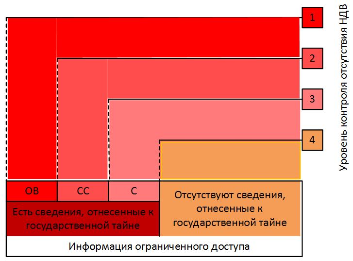
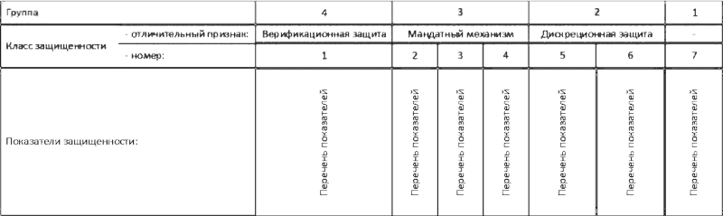
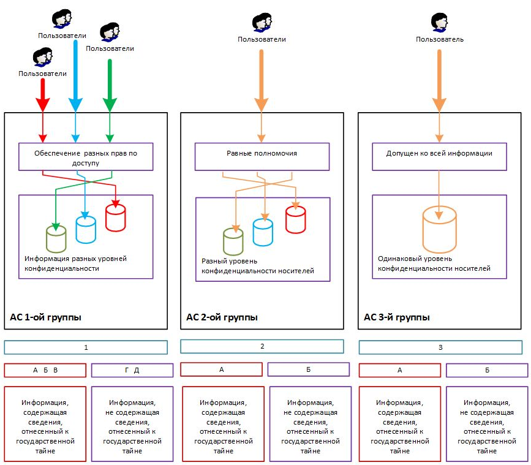
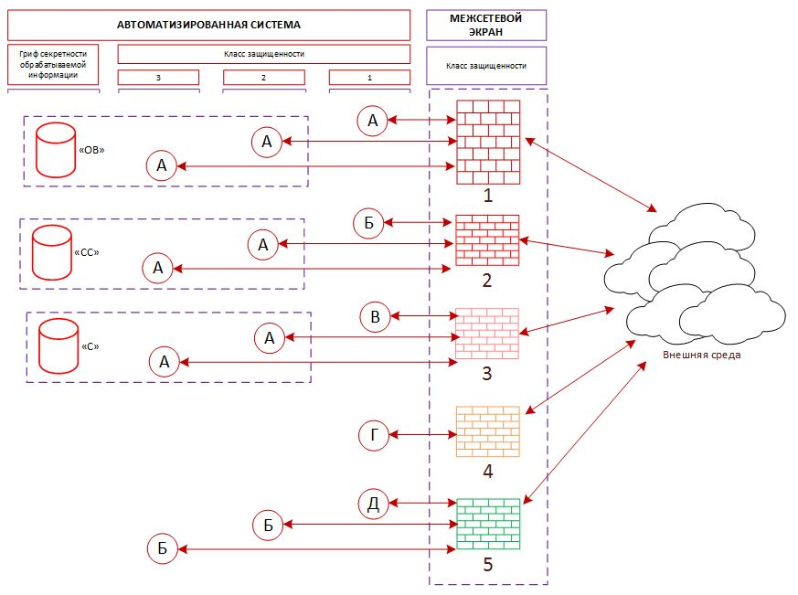
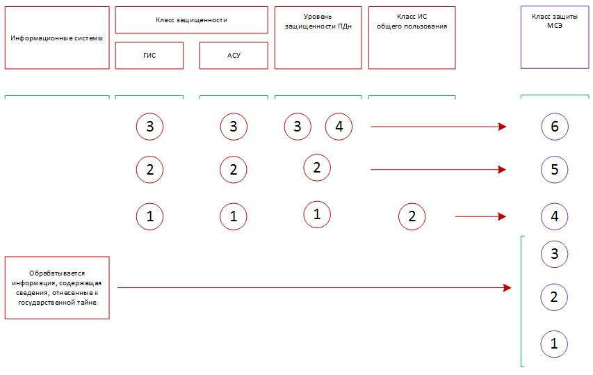
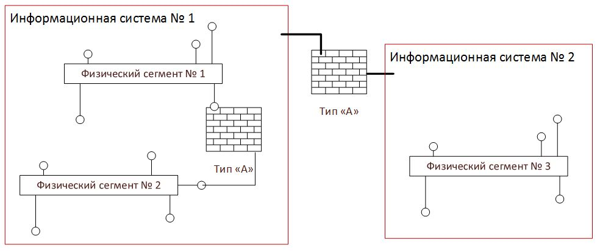
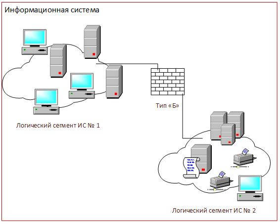
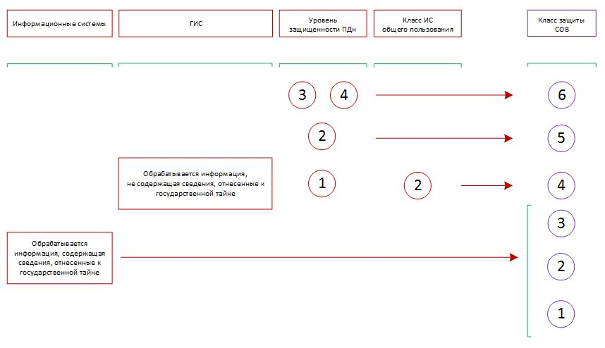
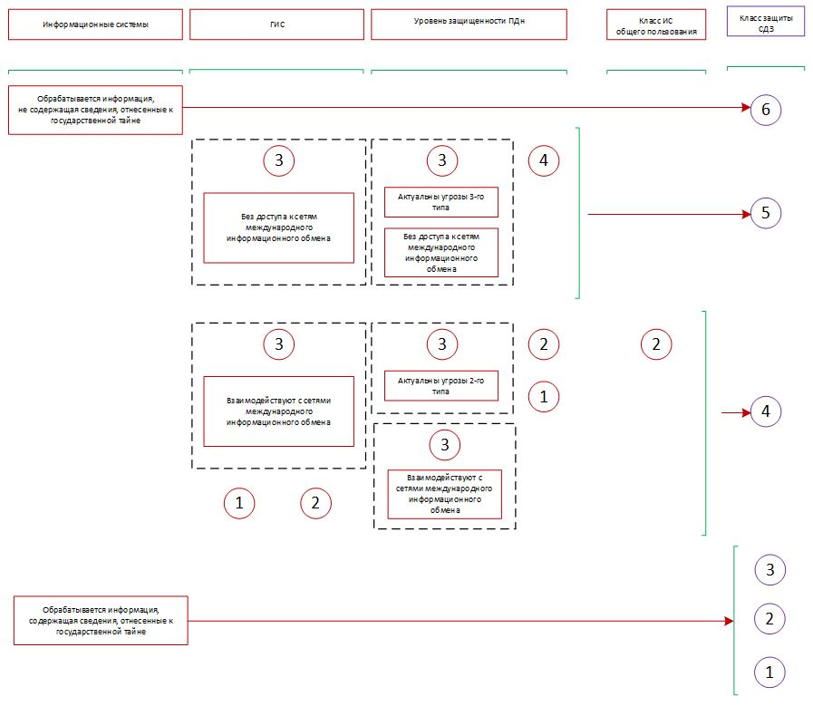
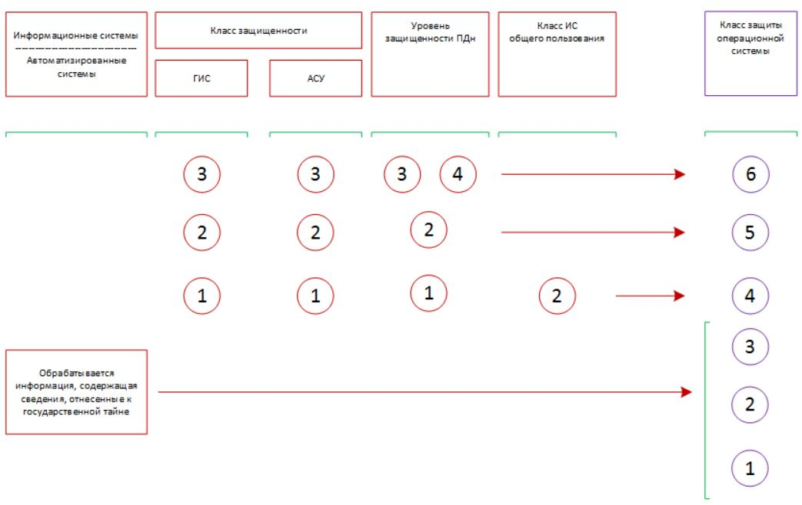

В требованиях по безопасности информации при проектировании информационных систем указываются признаки, характеризующие применяемые средства защиты информации. Они определены различными актами регуляторов в области обеспечения информационной безопасности, в частности — ФСТЭК и ФСБ России. Какие классы защищенности бывают, типы и виды средств защиты, а также где об этом узнать подробнее, отражено в этой статье.
Здесь рассмотренны:
Введение
Сегодня вопросы обеспечения информационной безопасности являются предметом пристального внимания, поскольку внедряемые повсеместно технологии без обеспечения информационной безопасности становятся источником новых серьезных проблем.
О серьезности ситуации сообщает ФСБ России: сумма ущерба, нанесенная злоумышленниками за несколько лет по всему миру составила от $300 млрд до $1 трлн. По сведениям, представленным Генеральным прокурором РФ, только за первое полугодие 2017 г. в России количество преступлений в сфере высоких технологий увеличилось в шесть раз, общая сумма ущерба превысила $ 18 млн. Рост целевых атак в промышленном секторе в 2017 г. отмечен по всему миру. В частности, в России прирост числа атак по отношению к 2016 г. составил 22 %.
Информационные технологии стали применяться в качестве оружия в военно-политических, террористических целях, для вмешательства во внутренние дела суверенных государств, а также для совершения иных преступлений. Российская Федерация выступает за создание системы международной информационной безопасности.
На территории Российской Федерации обладатели информации и операторы информационных систем обязаны блокировать попытки несанкционированного доступа к информации, а также осуществлять мониторинг состояния защищенности ИТ-инфраструктуры на постоянной основе. При этом защита информации обеспечивается за счет принятия различных мер, включая технические.
Средства защиты информации, или СЗИ обеспечивают защиту информации в информационных системах, по сути представляющих собой совокупность хранимой в базах данных информации, информационных технологий, обеспечивающих ее обработку, и технических средств.
Для современных информационных систем характерно использование различных аппаратно-программных платформ, территориальная распределенность компонентов, а также взаимодействие с открытыми сетями передачи данных.
Как защитить информацию в таких условиях? Соответствующие требования предъявляют уполномоченные органы, в частности, ФСТЭК и ФСБ России. В рамках статьи постараемся отразить основные подходы к классификации СЗИ с учетом требований указанных регуляторов. Иные способы описания классификации СЗИ, отраженные в нормативных документах российских ведомств, а также зарубежных организаций и агентств, выходят за рамки настоящей статьи и далее не рассматриваются.
Статья может быть полезна начинающим специалистам в области информационной безопасности в качестве источника структурированной информации о способах классификации СЗИ на основании требований ФСТЭК России (в большей степени) и, кратко, ФСБ России.
Структурой, определяющей порядок и координирующей действия обеспечения некриптографическими методами ИБ, является ФСТЭК России (ранее — Государственная техническая комиссия при Президенте Российской Федерации, Гостехкомиссия).
Если читателю приходилось видеть Государственный реестр сертифицированных средств защиты информации, который формирует ФСТЭК России, то он безусловно обращал внимание на наличие в описательной части предназначения СЗИ таких фраз, как «класс РД СВТ», «уровень отсутствия НДВ» и пр. (рисунок 1).
Рисунок 1. Фрагмент реестра сертифицированных СЗИ
Аналогичный перечень сертифицированных СЗИ поддерживает и ФСБ России в рамках своей компетенции. В нем фигурируют такие понятия, как «антивирусные средства класса Б2», «средства обнаружения атак класса Б» и пр.
Далее постараемся разобраться в терминах, основываясь в первую очередь на нормативных актах отечественных регуляторов сферы информационной безопасности. И начнем это описание с изложения используемой регуляторами терминологии.
Проникая в систему, злоумышленник преодолевает выстроенную систему защиты информации, осуществляет несанкционированный доступ. НСД. ФСТЭК России под системой защиты информации от НСД понимает совокупность мер организационного характера и программно-технических СЗИ от НСД. Функциональность СЗИ от НСД должна предотвращать или существенно затруднять несанкционированное проникновение в обход правил разграничения доступа, реализованных штатными средствами. Эти средства входят в состав средств вычислительной техники и автоматизированных систем в виде совокупности программного и технического обеспечения
При этом, регулятор полагает, что средства вычислительной техники являются элементами, из которых строятся автоматизированные системы. Поэтому, не решая прикладных задач, СВТ не содержат пользовательской информации. Совокупность требований в части защиты СВТ и АС образуют т. н. класс защищенности.
В качестве СЗИ регулятором рассматриваются т.н. межсетевые экраны — средства, реализующее контроль за информацией, направленной в АС или исходящей из нее. Межсетевые экраны выполняют фильтрацию информации по заданным критериям.
К СЗИ также относят т.н. средства обнаружения вторжений. Они представляют собой средства, автоматизирующие процесс контроля событий в системе (сети) с проведением анализа этих событий с целью поисках признаков инцидента ИБ.
Антивирусные СЗИ должны выявлять и соответствующим образом реагировать на средства несанкционированного уничтожения, блокирования, модификации, копирования информации или нейтрализации СЗИ.
В рамках реализации мер по управлению доступом предусмотрено обеспечение так называемой доверенной загрузки. Для этого применяются также соответствующие СЗИ.
Меры по защите машинных носителей информации в части обеспечения контроля за их использованием реализуются с помощью средств контроля съемных носителей.
Учитывая, что любое СЗИ содержит некий программный код, то можно предположить, что он обладает функциональностью, способствующей организации успешных атак в отношении защищаемых объектов. Такие возможности, не указанные в документации или описанные с искажением, использование которых может привести к нарушению ИБ, названы недекларированными (далее – НДВ). В результате, в отношении СЗИ была поставлена задача по проверке их на отсутствие в нем НДВ.
Регулятор выделил 4 уровня контроля отсутствия НДВ: первый — наивысший, а четвертый — низший (рисунок 2).
Рисунок 2. Классификация по уровню контроля на отсутствие НДВ

Как показано на рисунке 2, если СЗИ предназначено для защиты информации с грифом секретности «особой важности», то оно должно удовлетворять требованиям, предъявляемым к 1 уровню контроля.
В случае защиты информации с грифом секретности «совершенно секретно», то программное обеспечение применяемого СЗИ должно пройти как минимум второй уровень контроля.
Если гриф секретности защищаемой информации «секретно», то соответствие требованиям по третьему уровню контроля будет достаточным.
Что касается информации ограниченного доступа, не содержащей сведений, относящихся к государственной тайне, — достаточным уровнем контроля является самый низкий.
Здесь регулятор определил перечень классов защищенности, где первый считается наивысшим классом, а низшим — седьмой. Классы защищенности разделены на группы (рисунок 3).
Рисунок 3. Классы защищенности средств вычислительной техники

Первая группа образована 7 классом. Он устанавливается тем средствам вычислительной техники, которые должны содержать механизмы защиты от НСД к информации, но итоговая защищенность их ниже защищенности средств 6-го класса.
Вторую группу образовывают 6 и 5 классы защищенности. Они отличаются наличием дискреционного управления доступом. Этот механизм позволяет задавать правила доступа пользователей к различным ресурсам, таким как файл, программа и пр., в которых явно указано, что именно можно делать субъекту: читать содержимое файла, выполнять запуск программы и т. д.
Образующие третью группу 4, 3 и 2 классы отличаются реализацией мандатного управления доступом, основанным на использовании классификационных меток. Они позволяют пользователям и ресурсам назначать т. н. классификационные уровни, например — категории секретности обрабатываемой информации. Так, создается иерархическая структура, в которой пользователь может получить доступ к ресурсу в том случае, если его уровень в созданной иерархии не ниже уровня иерархии требуемого ресурса. В случае неиерархической структуры в классификационный уровень пользователя включают те классификационные уровни ресурсов, доступ к которым этому пользователю должен быть обеспечен.
При этом в этих средствах вычислительной техники присутствует механизм дискреционного управления доступом: дискреционные правила служат дополнением мандатных.
А в состав четвертой группы входил только 1 класс, характеризующийся наличием верифицированной защиты. Реализованный механизм защиты должен гарантированно обеспечивать перехват диспетчером доступа всех обращений субъектов доступа к объектам.
Всего выделено девять классов, объединенных в группы (рисунок 4).
Рисунок 4. Классы защищенности автоматизированных систем

Классы 1 группы — 1Д, 1Г, 1В, 1Б и 1А. Они характеризуют системы, в которых работает несколько пользователей. Пользователи имеют разные права доступа к информации. Уровни конфиденциальности информации также различны.
Во 2 группе — классы 2Б и 2А. В системах таких классов у пользователей равные полномочия в отношении всей информации. Сама же информация находится на носителях различного уровня конфиденциальности.
И, наконец, 3 группу образуют классы 3Б и 3А. В этом случае речь идет об однопользовательских системах. Пользователь допущен ко всей информации. Уровень конфиденциальности носителей — одинаковый.
Также определено, что если АС работает со сведениями, отнесенными к гостайне, то класс системы не должен быть ниже 3А, 2А, 1А, 1Б или 1В. При этом, для класса защищенности:
В основе классификации заложено деление по уровням контроля межсетевых информационных потоков (рисунок 5).
Рисунок 5. Классы защищенности межсетевых экранов

Самый высокий — 1-й класс. Он применим, когда требуется обеспечить безопасное взаимодействие автоматизированных систем класса 1А с внешней средой.
Если в автоматизированных системах классов 3А, 2А обрабатывается информация с грифом «особой важности», то требуется использовать межсетевой экран не ниже 1 класса.
Для защиты взаимодействия с внешним миром систем класса 1Б предназначены межсетевые экраны 2 класса. Если в системах классов 3А, 2А обрабатывается информация с грифом «совершенно секретно», необходимо использовать межсетевые экраны не ниже указанного класса.
Защита взаимодействия систем класса 1В обеспечивается межсетевыми экранами 3 класса. Если в автоматизированных системах классов 3А, 2А происходит обработка информации с грифом «секретно», потребуется межсетевой экран не ниже 3 класса.
Межсетевые экраны 4 класса требуются в случае защиты взаимодействия автоматизированных систем класса 1Г с внешней средой.
Взаимодействие систем класса 1Д должны обеспечивать межсетевые экраны 5 класса. Также требуется использовать их не ниже указанного класса для автоматизированных систем класса 3Б и 2Б.
В 2016 г. введена шестиуровневая классификация межсетевых экранов (рисунок 6).
Рисунок 6. Классификация межсетевых экранов по классам защиты

По такому подходу, в информационных системах защита информации, содержащей сведения, отнесенные к государственной тайны, должна обеспечиваться с помощью межсетевых экранов 3, 2 и 1 классов защиты.
Что касается остальных случаев, то в государственных информационных системах (ГИС) 1, 2 и 3 классов защиты должны использоваться межсетевые экраны 4, 5 и 6 классов соответственно. Аналогичная ситуация в отношении автоматизированных систем управления производственными и технологическими процессами (далее — АСУ).
Для обеспечения 1 и 2 уровней защищенности персональных данных в информационных системах персональных данных (ИСПДн) потребуется устанавливать межсетевые экраны 4 и 5 классов соответственно. Если же требуется обеспечить 3 или 4 уровень защищенности персональных данных, то достаточно 6 класса защиты.
Регулятор также определил необходимость использования межсетевых экранов 4 класса для защиты информации в информационных системах общего пользования II класса.
Регулятор выделяет межсетевые экраны уровня:
Межсетевые экраны типа «А» реализуется только в программно-техническом исполнении. «Б», «Г» и «Д» могут быть как в виде программного продукта, так и в ПТИ. Исключительно в виде программного продукта реализуется межсетевые экраны типа «В».
Межсетевые экраны типа «А» устанавливают на физическом периметре инфомационных систем. Если в них есть несколько физических сегментов, то такой межсетевой экран может устанавливаться между ними (рисунок 7).
Рисунок 7. Пример размещения межсетевых экранов типа «А»

Межсетевые экраны типа «Б» устанавливаются на логической границе информационных систем. Если в них выделяются логические сегменты, то между ними также может быть установлен межсетевой экран данного типа (рисунок 8).
Рисунок 8. Пример размещения межсетевого экрана класса «Б»

Для размещения на мобильных или стационарных узлах информационных систем предназначены межсетевые экраны типа «В».
Разбор http(s)-трафика между веб-сервером и клиентом осуществляют межсетевые экраны типа «Г». Они устанавливаются на сервере, обслуживающем веб-сайты (службы, приложения). Возможна установка на физической границе сегмента таких серверов.
С промышленными протоколами передачи данных работают межсетевые экраны типа «Д». Именно они устанавливаются в АСУ.
С 2011 г. используется шестиуровневая классификация систем обнаружения вторжений (рисунок 9).
Рисунок 9. Классы защиты систем обнаружения вторжений

По этому подходу, защита информационных систем, в которых обрабатывается информация, содержащая сведения, отнесенные к государственной тайне, обеспечивается средствами обнаружения вторжений 3, 2 и 1 классов защиты.
В ИСПДн для обеспечения 3 и 4 уровней защищенности персональных данных устанавливаются системы обнаружения вторжений 6 класса. Обеспечение 1 и 2 уровней защищенности персональных данных обеспечивается применением систем 4 и 5 классов защиты соответственно.
Защиту государственных систем при отсутствии сведений, составляющих государственную тайну, обеспечивают системы обнаружения вторжений 4 класса защиты.
В случае информационных систем общего пользования II класса надлежит применять системы обнаружения вторжений 4 класса.
Требования к функциям систем обнаружения вторжений отражены в разработанных ФСТЭК России профилях защиты. В спецификации профилей защиты выделяют системы обнаружения вторжений уровней сети и узла.
Система уровня сети подключается к коммуникационному оборудованию (например, коммутатору) и контролирует сетевой трафик, наблюдая за несколькими сетевыми узлами.
Система уровня узла устанавливается на узел и проводит анализ системных вызовов, журналов работы приложений и прочих источников узла.
ФСТЭК России ввел шестиуровневую классификацию средств антивирусной защиты. Эта система аналогична классификации для систем обнаружения вторжений, и ее вид соответствует представленному на рисунке 9. В частности, защита систем, в которых обрабатывается информация, содержащая сведения, отнесенные к государственной тайне, обеспечивается средствами антивирусной защиты 3, 2 и 1 классов.
В ИСПДн для обеспечения 3 и 4 уровней защищенности персональных устанавливаются средства антивирусной защиты 6 класса. Обеспечение 1 и 2 уровней защищенности персональных данных обеспечивается применением средств антивирусной защиты 4 и 5 классов защиты соответственно.
Защиту государственных информационных систем при отсутствии сведений, составляющих государственную тайну, обеспечивают средства антивирусной защиты 4 класса защиты.
Для систем общего пользования II класса надлежит применять средства антивирусной защиты 4 класса.
Регулятор выделяет средства антивирусной защиты, предназначенные для централизованного администрирования средств антивирусной защиты, установленных на компонентах информационных систем (тип «А»), а также — для применения на:
С 2013 г. введена 6-уровневая классификация средств доверенной загрузки (рисунок 10).
Рисунок 10. Классы защиты средств доверенной загрузки

При организации защиты ГИС 3 класса защищенности рассматривают случаи наличия доступа к сетям международного обмена и его отсутствия. При наличии взаимодействия должны применяться средства доверенной загрузки 4 класса защиты. Средства доверенной загрузки этого же класса должны использоваться в ГИС 1 и 2 классов защищенности.
При отсутствии взаимодействия с сетями международного информационного обмена ГИС 3 класса защищенности достаточно устанавливать СДЗ 5 класса.
Этот же класс достаточен в случае защиты ИСПДн, когда необходимо обеспечить 4 уровень защищенности персональных данных или 3-й — при отсутствии взаимодействия с сетями международного информационного обмена.
Для обеспечения 1 и 2 уровней защищенности персональных данных, а также 3-го —при наличии указанного сетевого взаимодействия или при актуальности угроз 2 типа потребуется установка средств доверенной загрузки 4 класса.
Применение средств доверенной загрузки 4 класса достаточно для защиты информационных систем общего пользования II класса.
Средства доверенной загрузки 6 класса устанавливаются, если они не относятся к ГИС, ИСПДн и информационных системам общего пользования, а также в них отсутствует обработка информации, содержащей сведения, отнесенные к государственной тайне. Если же они «причастны» к гостайне — потребуется установка СДЗ 3, 2 или 1 класса защиты.
Регулятор выделил средства доверенной загрузки уровней:
С 2014 г. введена 6-уровневая классификация средств контроля съемных машинных носителей. Она в полной мере аналогична рассмотренному выше случаю классификации средств доверенной загрузки (рисунок 10). Так же, при организации защиты ГИС 3 класса защищенности рассматривают случаи наличия доступа к сетям международного обмена и его отсутствия. При наличии взаимодействия должны применяться средства контроля носителей 4 класса защиты. Средства этого же класса должны использоваться в ГИС 1 и 2 классов защищенности.
При отсутствии взаимодействия с сетями международного информационного обмена в ГИС 3 класса защищенности достаточно устанавливать средства контроля съемных носителей 5 класса.
Этот же класс рассматриваемых СЗИ достаточен в случае защиты ИСПДн, когда необходимо обеспечить 4 уровень защищенности персональных данных или 3-й — при отсутствии взаимодействия с сетями международного информационного обмена.
Для обеспечения 1 и 2 уровней защищенности персональных данных, а также 3-го — при наличии указанного сетевого взаимодействия или при актуальности угроз 2 типа потребуется установка средств контроля съемных носителей 4 класса.
Применение средств контроля носителей 4 класса достаточно для защиты информационных систем общего пользования II класса.
Шестой класс рассматриваемых СЗИ устанавливается, если они не относятся к ГИС, ИСПДн и ИС общего пользования, а также в них отсутствует обработка информации, содержащей сведения, отнесенные к государственной тайне. Если же они «причастны» к гостайне — потребуется установка средств контроля носителей 3, 2 или 1 класса защиты.
В отношении них различают средства контроля:
С 2016 г. введена шестиуровневая классификация операционных систем, используемых для обеспечения защиты информации (рисунок 11).
Рисунок 11. Классы защиты операционных систем

Используемый подход классификации аналогичен представленному ранее, в частности, в отношении межсетевых экранов. Так, в информационных и автоматизированных системах защита информации, содержащей государственную тайну, должна обеспечиваться с помощью соответствующих механизмов операционных систем 3, 2 и 1 классов защиты.
Для государственных информационных систем 1, 2 и 3 классов защиты должны использоваться операционные системы 4, 5 и 6 классов соответственно. Аналогичная ситуация в отношении АСУ.
Для обеспечения 1 и 2 уровней защищенности персональных данных потребуется применение операционных систем 4 и 5 классов соответственно. Если же требуется обеспечить 3 или 4 уровень защищенности персональных данных, то достаточно развернуть операционную систему 6 класса защиты.
И, наконец, необходимо использование операционных систем 4 класса для защиты информации в ИС общего пользования II класса.
Различают операционные системы:
Системы типа «А» устанавливаются на средства вычислительной техники общего назначения, такие как АРМ, серверы, смартфоны, планшеты, телефоны и иные.
Операционные системы типа «Б» устанавливаются в специализированные технические средства, решающие заранее определенные наборы задач.
Системы типа «В» предназначены для обеспечения реагирования на события в рамках заданных временных ограничений при заданном уровне функциональности.
В настоящее время проводится внедрение системы оценки соответствия на основе стандарта ГОСТ Р ИСО / МЭК 15408. В рамках этого стандарта выделяют т. н. профиль защиты. Он представляет собой совокупность требований безопасности в отношении определенной категории изделий ИТ, независящую от реализации.
В зависимости от степени конфиденциальности обрабатываемой информации определены классы защищенности изделий ИТ. Так, при защите информации с грифом «особой важности» применяются изделия 1 класса. Для защиты информации с грифом «совершенно секретно» достаточным считается 2 класс защищенности. Третий класс защищенности достаточен при защите информации с грифом «секретно». А для защиты конфиденциальной информации потребуются изделия ИТ как минимум 4 класса защищенности.
По поручению Правительства Российской Федерации разработаны Требования по защите информации в информационных системах общего пользования. В них, в частности, определены такие виды средств защиты информации, как СЗИ от неправомерных действий (в том числе — средства криптографической защиты информации), средства обнаружения вредоносных программ (в том числе — антивирусные средства), средства контроля доступа к информации (в том числе — средства обнаружения компьютерных атак), средства фильтрации и блокирования сетевого трафика (в том числе — средства межсетевого экранирования). Использование таких СЗИ должно обеспечить требуемый уровень защищенности.
Средства защиты информации, реализующее алгоритмы криптографического преобразования информации, относят к криптографическим средствам защиты информации (по ГОСТ Р 50922-2006). Разработка, изготовление и распространение их является лицензируемым видом деятельности. Согласно Положения о лицензировании принято различать:
В первом случае речь идет о криптографических СЗИ, обеспечивающих возможность разграничения доступа к ней. Средства шифрования, в которых часть криптопреобразований осуществляется с использованием ручных операций или автоматизированных средств, предназначенных для выполнения таких операций, называют средствами кодирования.
Электронные документы, содержащие ключевую информацию, необходимую для выполнения криптографических преобразований с помощью средств шифрования, принято называть ключевыми документами. Средства шифрования, обеспечивающие создание ключевых документов, называют средствами изготовления ключевых документов.
Защиту от навязывания ложной информации, возможность обнаружения изменений информации с помощью реализованных в СЗИ криптографических механизмов предоставляют средства имитозащиты.
Криптографические СЗИ, обеспечивающие создание электронной цифровой подписи с использованием закрытого ключа, подтверждение с использованием открытого ключа подлинности электронной цифровой подписи, создание закрытых и открытых ключей электронной цифровой подписи относят к средствам электронной подписи.
Суть различий последних трех видов шифровальных средств, указанных выше, очевидно следует из их названий.
Более подробная информация, касающаяся криптографических СЗИ, отражена в утвержденном ФСБ России документе «ПКЗ-2005».
ФСБ России определены классы криптографических СЗИ: КС1, КС2, КС3, КВ и КА.
К основным особенностям СЗИ класса КС1 относится их возможность противостоять атакам, проводимым из-за пределов контролируемой зоны. При этом подразумевается, что создание способов атак, их подготовка и проведение осуществляется без участия специалистов в области разработки и анализа криптографических СЗИ. Предполагается, что информация о системе, в которой применяются указанные СЗИ, может быть получена из открытых источников.
Если криптографическое СЗИ может противостоять атакам, блокируемым средствами класса КС1, а также проводимым в пределах контролируемой зоны, то такое СЗИ соответствует классу КС2. При этом допускается, например, что при подготовке атаки могла стать доступной информация о физических мерах защиты информационных систем, обеспечении контролируемой зоны и пр.
В случае возможности противостоять атакам при наличии физического доступа к средствам вычислительной техники с установленными криптографическими СЗИ говорят о соответствии таких средств классу КС3.
Если криптографическое СЗИ противостоит атакам, при создании которых участвовали специалисты в области разработки и анализа указанных средств, в том числе научно-исследовательские центры, была возможность проведения лабораторных исследований средств защиты, то речь идет о соответствии классу КВ.
Если к разработке способов атак привлекались специалисты в области использования НДВ системного программного обеспечения, была доступна соответствующая конструкторская документация и был доступ к любым аппаратным компонентам криптографических СЗИ, то защиту от таких атак могут обеспечивать средства класса КА.
Средства электронной подписи в зависимости от способностей противостоять атакам принято сопоставлять со следующими классами: КС1, КС2, КС3, КВ1, КВ2 и КА1. Эта классификация аналогична рассмотренной выше в отношении криптографических СЗИ.
В статье были рассмотрены некоторые способы классификации СЗИ в России, основу которых составляет нормативная база регуляторов в области защиты информации. Рассмотренные варианты классификации не являются исчерпывающими. Тем не менее надеемся, что представленная сводная информация позволит быстрее ориентироваться начинающему специалисту в области обеспечения ИБ.